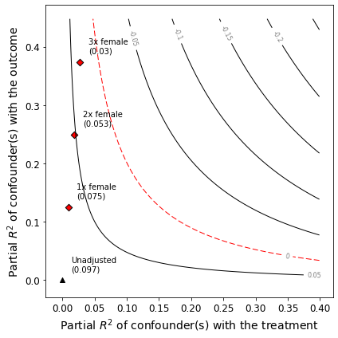

Example
[3]:
# Imports
from sensemakr import sensitivity_stats
from sensemakr import bias_functions
from sensemakr import ovb_bounds
from sensemakr import ovb_plots
from sensemakr import data
import statsmodels.api as sm
import statsmodels.formula.api as smf
import numpy as np
import pandas as pd
[2]:
%load_ext autoreload
[19]:
%autoreload 2
[20]:
# loads data
darfur = data.load_darfur()
darfur.head()
[20]:
| wouldvote | peacefactor | peace_formerenemies | peace_jjindiv | peace_jjtribes | gos_soldier_execute | directlyharmed | age | farmer_dar | herder_dar | pastvoted | hhsize_darfur | village | female | |
|---|---|---|---|---|---|---|---|---|---|---|---|---|---|---|
| 0 | 0 | 1.000000 | 1 | 1 | 1 | 0 | 0 | 30 | 0 | 0 | 1 | 23 | Abdel Khair | 0 |
| 1 | 0 | 0.706831 | 0 | 1 | 1 | 0 | 0 | 20 | 1 | 0 | 1 | 5 | Abdi Dar | 1 |
| 2 | 1 | 0.000000 | 0 | 0 | 0 | 1 | 0 | 45 | 1 | 0 | 0 | 15 | Abu Sorog | 0 |
| 3 | 1 | 0.495178 | 1 | 0 | 0 | 0 | 1 | 55 | 0 | 0 | 0 | 9 | Abu Dejaj | 0 |
| 4 | 0 | 0.000000 | 0 | 0 | 0 | 1 | 1 | 25 | 1 | 0 | 1 | 7 | Abu Dejaj | 1 |
[21]:
# runs regression model
reg_model = smf.ols(formula='peacefactor ~ directlyharmed + age + farmer_dar + herder_dar + '\
'pastvoted + hhsize_darfur + female + village', data=darfur)
model = reg_model.fit()
[22]:
# Define parameters for sensemakr
treatment = "directlyharmed"
q = 1.0
alpha = 0.05
reduce = True
benchmark_covariates=["female"]
kd = [1, 2, 3]
ky = kd
[23]:
# Create a sensemakr object and print summary of results
s = sensemakr.Sensemakr(model, treatment, q=q,
alpha=alpha, reduce=reduce, benchmark_covariates=benchmark_covariates, kd=kd)
s.summary()
Sensitivity Analysis to Unobserved Confounding
Model Formula: peacefactor ~ directlyharmed + age + farmer_dar + herder_dar + pastvoted + hhsize_darfur + female + village
Null hypothesis: q = 1.0 and reduce = True
-- This means we are considering biases that reduce the absolute value of the current estimate.
-- The null hypothesis deemed problematic is H0:tau = 0.0
Unadjusted Estimates of ' directlyharmed ':
Coef. estimate: 0.097
Standard Error: 0.023
t-value: 4.184
Sensitivity Statistics:
Partial R2 of treatment with outcome: 0.022
Robustness Value, q = 1.0 : 0.139
Robustness Value, q = 1.0 alpha = 0.05 : 0.076
Verbal interpretation of sensitivity statistics:
-- Partial R2 of the treatment with the outcome: an extreme confounder (orthogonal to the covariates) that explains 100% of the residual variance of the outcome, would need to explain at least 2.187 % of the residual variance of the treatment to fully account for the observed estimated effect.
-- Robustness Value, q = 1.0 : unobserved confounders (orthogonal to the covariates) that explain more than 13.878 % of the residual variance of both the treatment and the outcome are strong enough to bring the point estimate to 0.0 (a bias of 100.0 % of the original estimate). Conversely, unobserved confounders that do not explain more than 13.878 % of the residual variance of both the treatment and the outcome are not strong enough to bring the point estimate to 0.0 .
-- Robustness Value, q = 1.0 , alpha = 0.05 : unobserved confounders (orthogonal to the covariates) that explain more than 7.626 % of the residual variance of both the treatment and the outcome are strong enough to bring the estimate to a range where it is no longer 'statistically different' from 0.0 (a bias of 100.0 % of the original estimate), at the significance level of alpha = 0.05 . Conversely, unobserved confounders that do not explain more than 7.626 % of the residual variance of both the treatment and the outcome are not strong enough to bring the estimate to a range where it is no longer 'statistically different' from 0.0 , at the significance level of alpha = 0.05 .
Bounds on omitted variable bias:
--The table below shows the maximum strength of unobserved confounders with association with the treatment and the outcome bounded by a multiple of the observed explanatory power of the chosen benchmark covariate(s).
bound_label r2dz_x r2yz_dx treatment adjusted_estimate \
0 1x female 0.009164 0.124641 directlyharmed 0.075220
1 2x female 0.018329 0.249324 directlyharmed 0.052915
2 3x female 0.027493 0.374050 directlyharmed 0.030396
adjusted_se adjusted_t adjusted_lower_CI adjusted_upper_CI
0 0.021873 3.438904 0.032283 0.118158
1 0.020350 2.600246 0.012968 0.092862
2 0.018670 1.628062 -0.006253 0.067045
[68]:
# Make a contour plot for the estimate
ovb_plots.ovb_contour_plot(sense_obj=s, sensitivity_of='estimate')

[69]:
ovb_plots.ovb_extreme_plot(sense_obj=s)